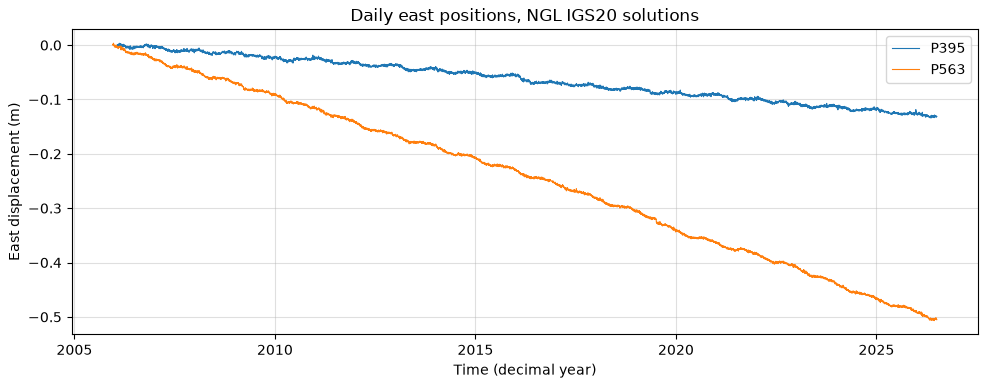

Session 1 · Wed Sep 30 · Book section 1.1
🌋
An AI assistant can draft a working analysis in minutes.
What is left that only the scientist can do?
Reading: 1.1 Open reproducible science
✓ The field’s survey: where ML genuinely advances solid-Earth science — detection, discovery, emulation.
Bergen, K. J., Johnson, P. A., de Hoop, M. V., & Beroza, G. C. (2019). Machine learning for data-driven discovery in solid Earth geoscience. Science, 363, eaau0323.
📖 Why geoscience data resist off-the-shelf ML: physical structure, data correlation, rare events, few labels.
Karpatne, A., Ebert-Uphoff, I., Ravela, S., Babaie, H. A., & Kumar, V. (2019). Machine learning for the geosciences: Challenges and opportunities. IEEE Transactions on Knowledge and Data Engineering, 31(8), 1544–1554.
✗ Leakage-inflated ML claims documented across 17 research fields — overoptimism is the default, not the exception.
Kapoor, S., & Narayanan, A. (2023). Leakage and the reproducibility crisis in machine-learning-based science. Patterns, 4, 100804.
Two maps of the opportunity, one measurement of the failure mode. The refs file updates as the field moves — bring me candidates.

GNSS stations P395 and P563, Pacific Northwest — daily positions to a few millimeters (Nevada Geodetic Laboratory). The smooth drift is plate motion; the wiggles are seasonal water loading.
The fifth canonical use, signal processing — denoising, gap filling — rides with automation. Matching method to question is learning outcome #1.
Every one of these already runs in production somewhere in the geosciences.
200,000,000+ predicted protein structures, released open
Protein structure prediction reached experimental accuracy — a problem open since the 1960s — and the 2024 Nobel Prize in Chemistry followed.
Jumper, J., et al. (2021). Highly accurate protein structure prediction with AlphaFold. Nature, 596, 583–589.
Scientific discovery: ML answered a question the field could not.
< 1 minute for a 10-day global forecast, on one processor
Machine-learned weather models now beat the leading physics-based system on most verification targets — at a thousandth of the compute. Operational centers run them today.
Lam, R., et al. (2023). Learning skillful medium-range global weather forecasting. Science, 382, 1416–1421.
Acceleration: hours on a supercomputer became seconds — and the workflow changed shape.
1,810,000 earthquakes in ten years of Southern California data
Template matching and deep learning re-read an existing archive and found ~10x the cataloged earthquakes — no new instrument installed. Fault structures and foreshock sequences appeared where the catalog had been blank.
Ross, Z. E., et al. (2019). Searching for hidden earthquakes in Southern California. Science, 364, 767–771.
Transformed inquiry in our own field: the data were already there — the method made them legible.
~381,000 new stable crystals predicted — an order of magnitude beyond the known set
Deep learning proposed millions of candidate crystal structures and filtered them to hundreds of thousands of stable ones — a century of conventional discovery rate, compressed.
Merchant, A., et al. (2023). Scaling deep learning for materials discovery. Nature, 624, 80–85.
Discovery at scale: the search space itself became the instrument.
| Pillar | Where | You leave able to |
|---|---|---|
| AI-ready data | Chapter 2 | turn a raw sensor stream into a data set a model can learn from |
| Classic machine learning | Chapter 3 | train feature-based models and evaluate them honestly |
| Deep learning | Chapter 4 | build and diagnose networks in PyTorch |
| Working with agentic AI | Chapters 1 & 6, woven throughout | verify, disclose, and evaluate AI help |
The fourth row is the 2026 difference: a skill to be taught, not a shortcut to be policed.
minutes for an assistant to draft a working analysis of that GNSS series
3 jobs that stay yours: frame the problem, judge the evaluation, interpret the science
“If you can do these three, an assistant makes you faster. If you cannot, an assistant makes you wrong at scale.” — course policy, 1.8
Open data built this field — waveforms, GNSS, imagery arrive free. Publishing your work the same way closes the loop.
One idea, applied to everything you build this quarter — including the AI.
| Idea | Geoscience example | Where it lands |
|---|---|---|
| ML’s canonical uses | picking earthquakes in continuous waveforms | Chapters 3–4 |
| Open, reproducible science | NGL data cited; your repository licensed and rerunnable | every submission |
| Fair evaluation | validate the GNSS model on future days, not shuffled days | 3.8 → 6.3, leaderboards |
| Working with agents | disclose the tool, verify the output | 1.8, Chapter 6 |
Judgment about data, evaluations, and meaning is the product of this course. The code is a byproduct.
MLGEO2026_UWNETID repository — due Mon Oct 12Friday: the workbench lab — version control, environments, your first pull request. Bring a charged laptop.
ESS 469/569 · Machine Learning in the Geosciences · Autumn 2026